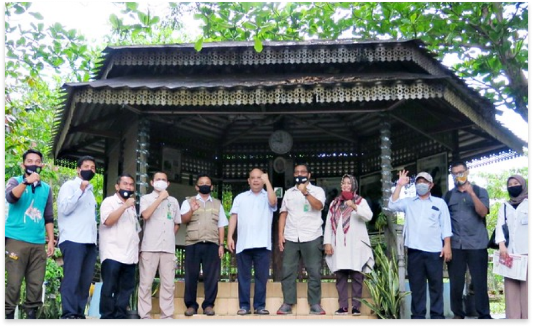
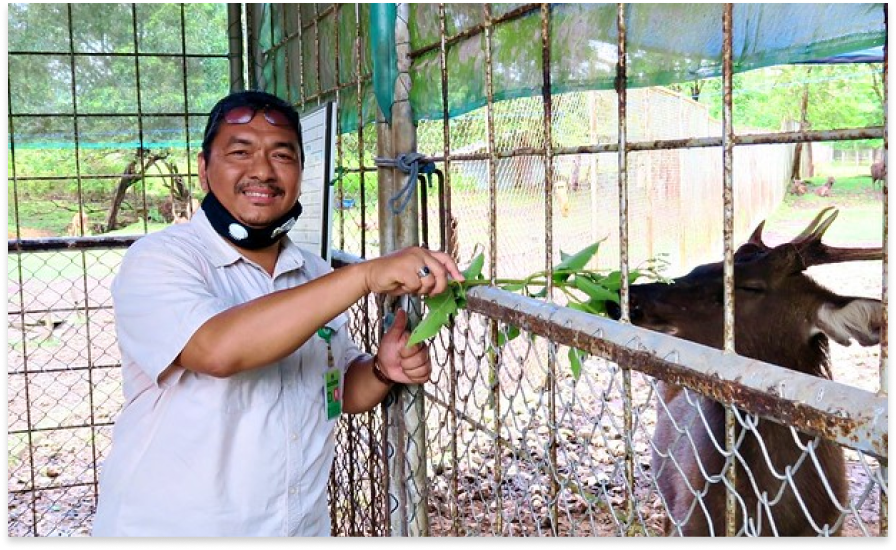

Perkuat Kemitraan untuk Pemulihan
Ekosistem di
SKW III
Oleh : Prawira Aditya Rahman, S.E | 4 Sep’ 2020
KOTABARU, 2 SEPTEMBER 2020. Menindaklanjuti hasil temuan Inspektorat Jenderal KLHK terkait PKS antara Balai KSDA Kalimantan Selatan dengan PT. Indocement Tunggal Prakarsa, Tbk. (PT ITP) dalam rangka tukar menukar sebagian kawasan Cagar Alam di Kabupaten Kotabaru berupa Pembangunan Hutan Penelitian dan Pembangunan Penangkaran Satwa yang Dilindungi, pada tanggal 2 September 2020 Kepala Balai KSDA Kalimantan Selatan Dr. Ir. Mahrus Aryadi, M. Sc didampingi KSBTU Suwandi, S.Hut., M.A, Ka.SKW III Batulicin Nikmat Hakim Pasaribu, S.P., M.Sc, dan Kepala Resort CA Teluk Kelumpang Ahmad Nabawi beserta Tim melaksanakan peninjauan lapangan ke PT.ITP. Kunjungan tersebut diterima oleh tim dari PT.ITP Boby Wardhana, Yulizar, Agus Rifani dan I Wayan Kedep.
Pertemuan di ruang terbuka dengan menjaga protokol kesehatan, perwakilan PT. ITP Bapak Bobby mengungkapkan bahwa kendala dalam pembangunan hutan penelitian adalah kesulitan dalam menyediakan lahan yang clean and clear. Untuk sanctuary Bekantan terkendala keterbatasan fasilitas infrastruktur yang tidak terganggu dengan aktivitas manusia, lokasi pembangunan sanctuary yang sampai dengan saat ini belum menemukan areal yang cukup baik untuk mendukung pengembangan sanctuary dan keterbatasan sumber daya manusia yang berpengalaman dalam pengelolaan suaka satwa tersebut. Dr. Mahrus mengatakan akan meminta arahan kepada Dirjen KSDAE terkait hal tersebut dengan mempertimbangkan bahwa pembangunan/pengelolaan hutan penelitian bukan merupakan tupoksi KSDAE. Apabila memungkinkan akan dikonversi dengan kegiatan yang menjadi tupoksi BKSDA seperti pembangunan hutan penelitian menjadi pemulihan ekosistem mangrove dan Sanctuary Bekantan menjadi pembangunan kandang transit satwa, tuturnya. Pembangunan kandang transit menjadi salah satu prioritas Balai KSDA Kalimantan Selatan saat ini karena tempat eksisting sudah tidak representatif dari segi lokasi karena berada di tengah kota dengan status pinjam pakai dan berbatasan dengan rumah dinas Sekdaprov Kalsel. Apabila konversi disetujui akan dibangun di areal sendiri, tambah Dr. Mahrus.
Selain itu rombongan Balai KSDA Kalimantan Selatan juga mengunjungi penangkaran Rusa Sambar (Rusa unicolor). Pada awal penangkaran tahun 2010 jumlah Rusa sejumlah 7 ekor dengan jantan sebanyak 2 ekor dan betina 5 ekor, sekarang sudah berjumlah 25 ekor dengan 13 ekor jantan dan 12 ekor betina. Selain Rusa Sambar, terdapat juga pemeliharaan Owa-owa (Hylobates sp) yang berisi 1 ekor jantan dan 2 ekor betina. Kegiatan lainnya budidaya lebah kelulut, perikanan air tawar, pertanian dan peternakan unggas.